GROW ICT · Autumn 2 · Week 2
Year A | Autumn 2 · Week 2 | 9 November 2026
Identity & Belonging

Year A | Autumn 2 · Week 2 | 9 November 2026
Identity & Belonging
Made by Matt
I can add one point when the player touches a pickup.
I can add one hit when the player touches a hazard.
I can choose change blocks instead of set blocks.
I can save and test my maze project.
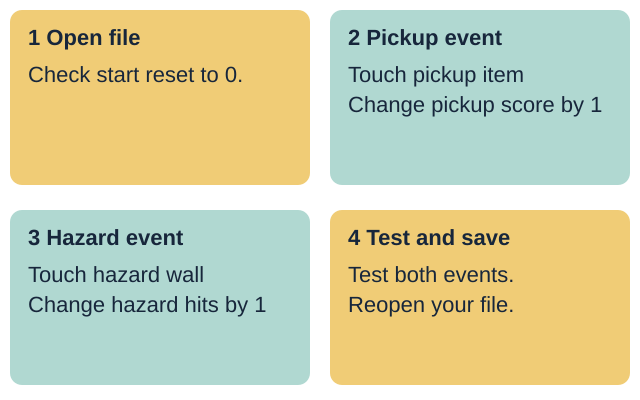
Your response: Choose one scoring event skill to practise today.
Introduce Week 2 of the GROW ICT Autumn 2 maze sequence for the unit award. All variable names and event rules come from fictional project cards A and B. Keep personal names, places and external account details out of the task.
Made by Matt
Tap an answer. You may try again.
1. How many score boxes are shown?
2. What should both scores be on start?
3. How do you check your saved maze file?
Right first time: 0 / 3
Where did you save your Week 1 maze file?
Which two score variables did you create?
How do both variables reset to zero on start?
Open your Week 1 file or the clean starter file.
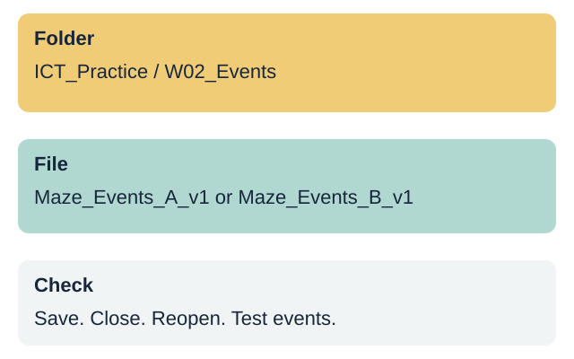
Your response: Show or explain how your start script resets both scores.
Retrieve the Week 1 file and check that both score variables reset to 0 on start. If a pupil's Week 1 file is absent, open the prepared Week 2 starter maze file with both variables and start resets ready.
Made by Matt
Use the model below. Say the next step, then light it.
Choose Next step to start.
Lights only. No sound. Use Next step for a still view.
Class vote. Show one finger for set to 1, two for change by 1. Which block counts each pickup touch? Explain your vote.
Look at Script A and Script B. Which script adds points each time you touch a pickup?
Script B works because change FuelScore by 1 adds one point to the current total.
Script A stays at 1 because set FuelScore to 1 overwrites the score instead of adding.
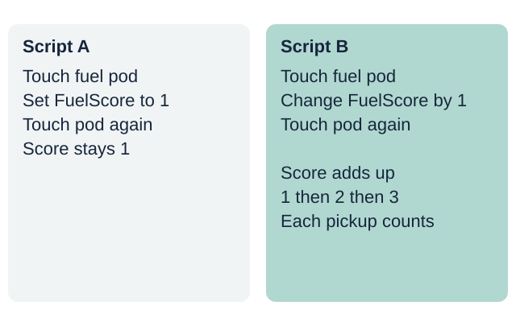
Your response: Choose a script and explain why the score goes up.
Compare a pickup script that uses set FuelScore to 1 with one that uses change FuelScore by 1. Explain that set fixes the value at 1 every time, while change adds 1 to the current total.
Made by Matt
Check when the player touches the pickup sprite.
Change the pickup variable by 1 inside that check.
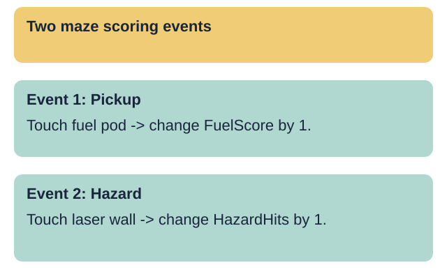
Your response: Point to the block that adds one pickup point.
Model adding a touching check for the pickup item in Card A. Place change FuelScore by 1 inside the touching check and make sure the variable drop-down selects FuelScore, not HazardHits.
Made by Matt
Check when the player touches a hazard wall.
Change the hazard variable by 1 and return to start.
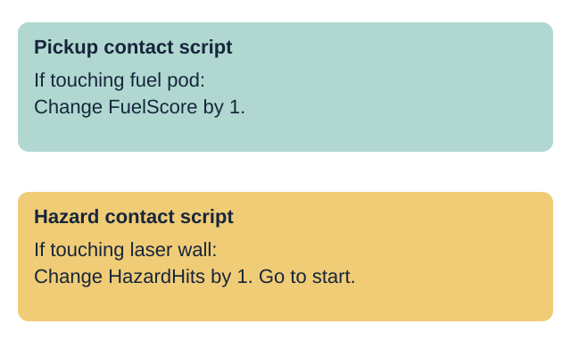
Your response: Point to the block that records a hazard hit.
Model the second event rule for Card A: when touching the hazard wall, change HazardHits by 1 and move the player back to the start pad so the hit is counted clearly.
Made by Matt
event: a trigger that runs a rule in the game
touching: a check for contact between two sprites
change: add to or take away from a variable value
set: fix a variable to one exact value
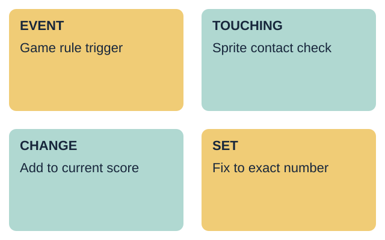
Your response: Use one word to explain how a score goes up.
Teach the four words using the two event scripts on screen. Highlight the difference between set on start and change on contact.
Made by Matt
Work in pairs. One partner points to the next event on the model: start, pickup, pickup, hazard. The other holds two paper counters and changes only the right one. Compare with the event rules below. Swap roles. The teacher walks round to check. Stand or stay seated and direct a partner.
Points. Each pair earns 1 point for pickup score 2 and hazard hits 1 after the sequence, and 1 more for resetting both to 0 on start. Every pair can score and retry.
Touch fuel pod: change FuelScore by 1.
Touch hazard wall: change HazardHits by 1.
Pickup contact: when touching fuel pod, change FuelScore by 1.
Hazard contact: when touching hazard wall, change HazardHits by 1 and go to start pad.
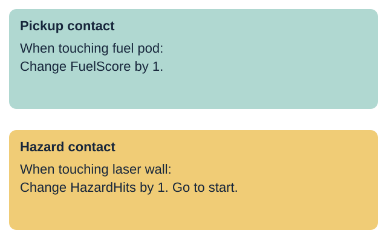
Your response: Match each maze contact to the right variable block.
Use Space maze card A. Match pickup contact to change FuelScore by 1 and hazard contact to change HazardHits by 1. Check that set-to-zero stays on the start event only.
Made by Matt
Touch the pickup and watch the pickup readout.
Touch the hazard and watch the hazard readout.
Check the variable drop-down if touching a hazard changes the pickup score.
Replace set with change if a counter stays stuck at 1.
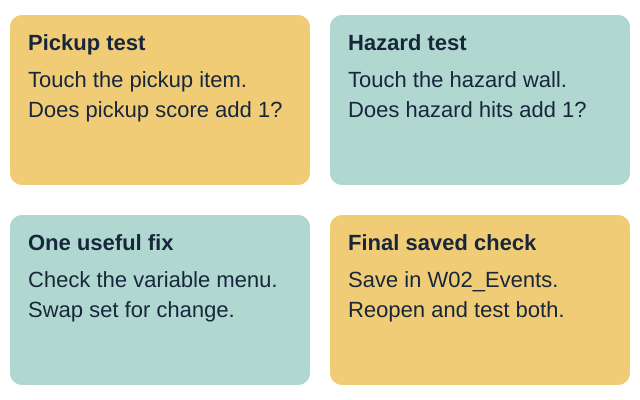
Your response: Give one fix if the wrong variable changes.
Model testing both events in turn: touch the pickup, check that FuelScore increases by 1, then touch the hazard wall and check that HazardHits increases by 1. Press start to verify both still reset to 0.
Made by Matt
Keep the task below. You may add your tier’s paper choice. In your book, keep your plan and checks. Paper work helps you plan. Still build, save and test your own file.
Supported: use the two-event scoring frame.
Independent: build and test both event score rules.
Aspire: add a finish bonus event and save v2.
Each person saves and checks their own project file.
Your response: Choose a route and build your two scoring events.
Slides 10-13 share this 12-minute task time. Each pupil updates their own maze file in ICT_Practice/W02_Events. A shared device uses six-minute turns: Card A then Card B, swapping builder and tester roles.
Made by Matt
Make two lift-flap score cards. Show the score before and after each contact.
In your book, keep the plan and checks. Keep the file task below.
Open your maze file for card A or card B.
Add change pickup score by 1 to the pickup check.
Add change hazard hits by 1 to the hazard check.
Test both events with your partner.
Save, reopen and test the events again.
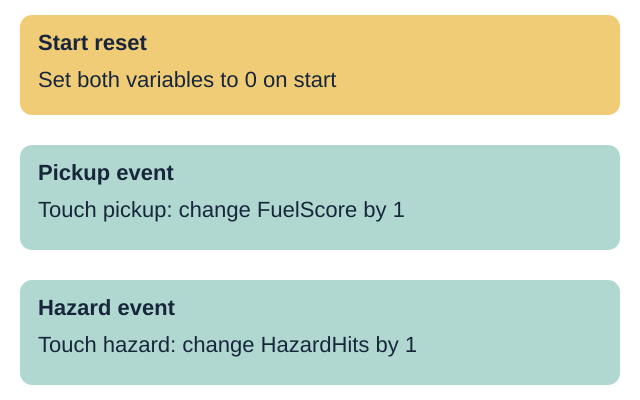
Your response: Show each score changing when you touch each item.
Use the Supported planning frame. Point to the two touching checks and let the pupil choose the variable name and change value. Record any prompts or exact scribing used.
Made by Matt
Make a four-frame storyboard: start, pickup, pickup, hazard. Track both scores.
In your book, keep the plan and checks. Keep the file task below.
Open your maze file for card A or card B.
Build the pickup contact rule to add 1 to the pickup score.
Build the hazard contact rule to add 1 to hazard hits.
Test pickup contact, hazard contact and start reset.
Save your file in W02_Events, then reopen it.
Your response: Ask your partner to test both scoring events.
The pupil builds both event rules using their project card and saves as Maze_Events_A_v1 or Maze_Events_B_v1 in ICT_Practice/W02_Events.
Made by Matt
Make a finish bonus flap. Show the pickup score before and after adding 5. Keep a version 1 plan.
In your book, keep the plan and checks. Keep the file task below.
Complete the Independent task first.
Add the finish gate bonus rule from your project card.
Change the pickup score by 5 when touching the finish.
Ask a partner to test all three scoring events.
Save a new v2 file and explain your change.
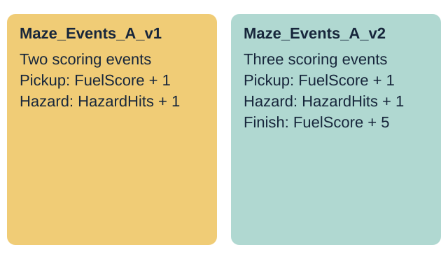
Your response: Show how the finish gate adds a bonus to your score.
Use the card's stretch rule to add a +5 finish bonus when touching the finish target. Save as Maze_Events_A_v2 or Maze_Events_B_v2 while keeping v1.
Made by Matt
My file name is ...
My pickup event changes ... by ...
My hazard event changes ... by ...
I fixed or improved ... because ...
I reopened the saved file and tested both events.
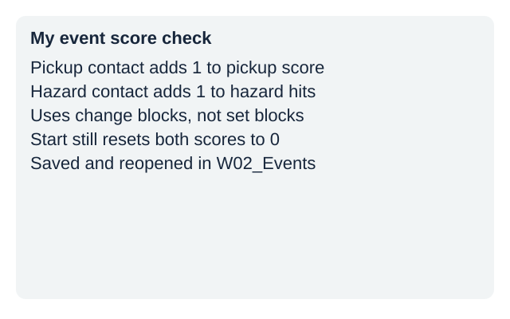
Your response: Record your two event rules and the help used.
Observe the pickup score rule, the hazard hit rule, the distinction between change and set, and the reopened file check. Record actual support. Do not prefill pupil codes or tick boxes.
Made by Matt
Tap an answer. You may try again.
1. Which block adds another pickup point?
2. A hazard touch should change which value?
3. What stays on the start event?
Right first time: 0 / 3
Show your pickup event and your hazard event.
Explain why we use change by 1 instead of set to 1.
Open your saved file and test both events.
Your response: Show your two event rules and give one reason.
Three minutes for individual checks, two for feedback and close. Check the saved file in W02_Events. Week 3 stops a pickup counting more than once. Week 7 is the assessing lesson; this week is formative.
Watch (staff preview first): none suggested.
Keep the original models, task and file checks. Use the stated team points and allow a seated turn.
Made by Matt